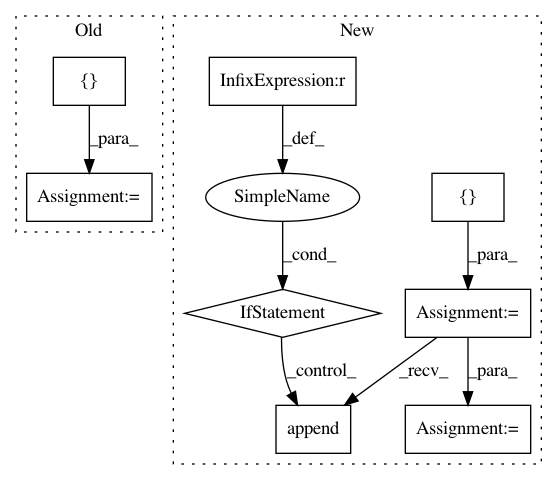

9943f36fd3cf218775b735ddd41e2939487c0e0f,niftynet/application/autoencoder_application.py,AutoencoderApplication,initialise_dataset_loader,#AutoencoderApplication#Any#Any#Any#,38
Before Change
// read each line of csv files into an instance of Subject
if self.is_training:
self.readers = [ImageReader(["image"])]
if self.action_param.validate_every_n:
self.readers.append(ImageReader(["image"]))
if self._infer_type in ("encode", "encode-decode"):
self.readers = [ImageReader(["image"])]
elif self._infer_type == "sample":
self.readers = []
elif self._infer_type == "linear_interpolation":
self.readers = [ImageReader(["feature"])]
file_list = data_partitioner.get_file_list()
for reader in self.readers:
reader.initialise(data_param, task_param, file_list)
//if self.is_training or self._infer_type in ("encode", "encode-decode"):
// mean_var_normaliser = MeanVarNormalisationLayer(image_name="image")
// self.reader.add_preprocessing_layers([mean_var_normaliser])
def initialise_sampler(self):
self.sampler = []
if self.is_training:
self.sampler.append([ResizeSampler(
After Change
// read each line of csv files into an instance of Subject
if self.is_training:
file_lists = []
if self.action_param.validation_every_n > 0:
file_lists.append(data_partitioner.train_files)
file_lists.append(data_partitioner.validation_files)
else:
file_lists.append(data_partitioner.all_files)
self.readers = []
for file_list in file_lists:
reader = ImageReader(["image"])
reader.initialise(data_param, task_param, file_list)
self.readers.append(reader)
if self._infer_type in ("encode", "encode-decode"):
self.readers = [ImageReader(["image"])]
self.readers[0].initialise(data_param,
task_param,
In pattern: SUPERPATTERN
Frequency: 3
Non-data size: 8
Instances
Project Name: NifTK/NiftyNet
Commit Name: 9943f36fd3cf218775b735ddd41e2939487c0e0f
Time: 2017-11-14
Author: wenqi.li@ucl.ac.uk
File Name: niftynet/application/autoencoder_application.py
Class Name: AutoencoderApplication
Method Name: initialise_dataset_loader
Project Name: ray-project/ray
Commit Name: c9f13b0833ee499a074f15192a6eaf7a6513a296
Time: 2020-08-13
Author: ekhliang@gmail.com
File Name: python/ray/worker.py
Class Name:
Method Name: get_gpu_ids
Project Name: NifTK/NiftyNet
Commit Name: 83f6726852bd539c427523bf4bf35f07b0744014
Time: 2017-11-14
Author: wenqi.li@ucl.ac.uk
File Name: niftynet/application/regression_application.py
Class Name: RegressionApplication
Method Name: initialise_dataset_loader